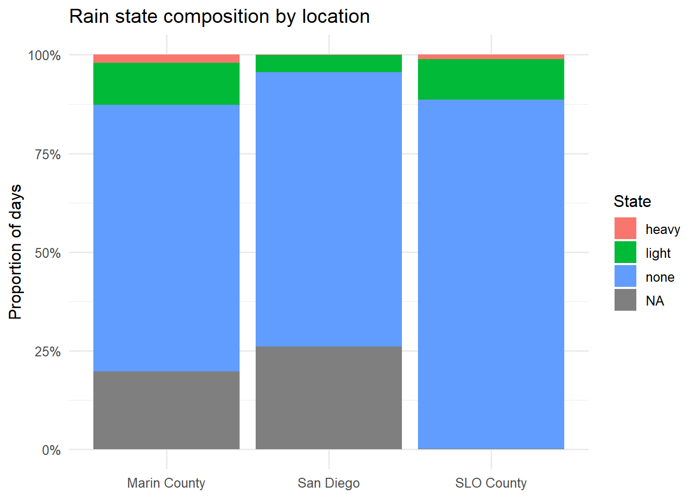
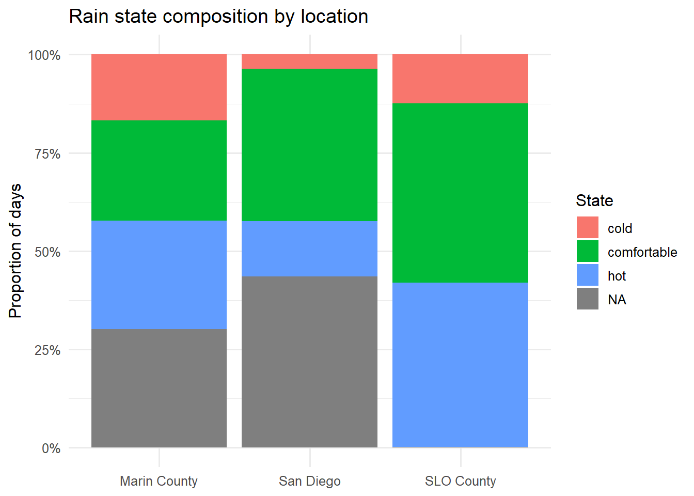
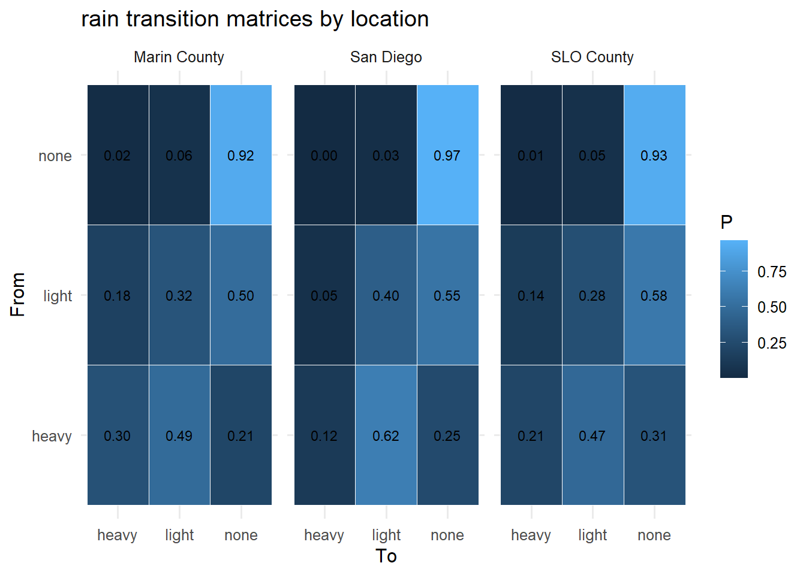
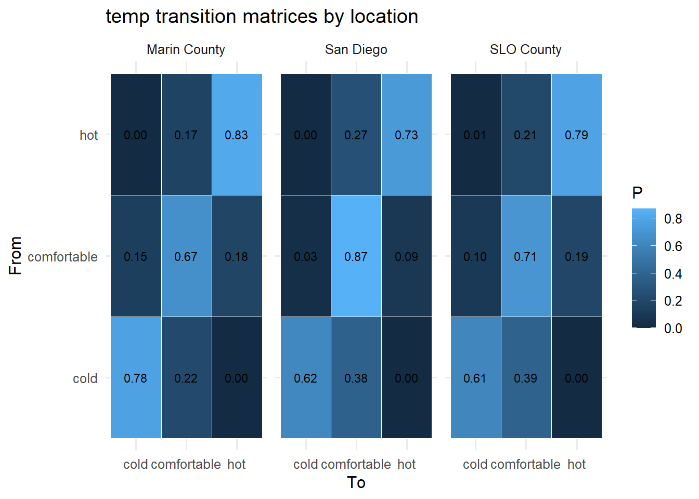
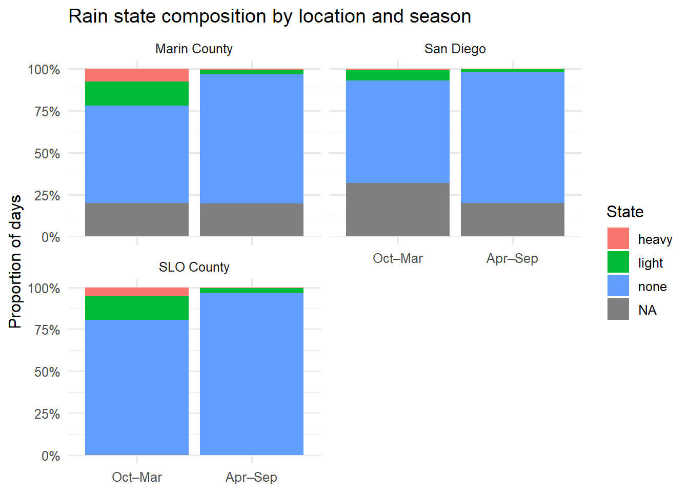
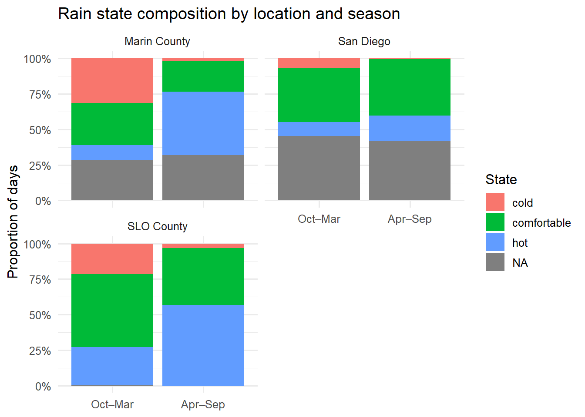
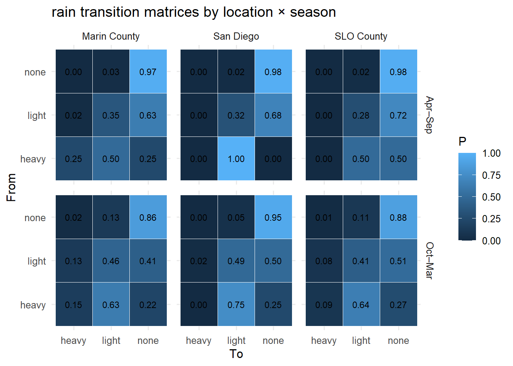
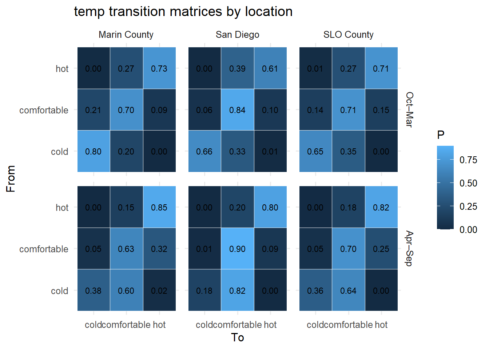

# imperial beach station USW00093115
# 12/25/2008 - 1/12/2026
sd <- read.csv("https://www.ncei.noaa.gov/access/past-weather/USW00093115/data.csv", skip = 1) |>
mutate(Date = as.Date(Date, tryFormats = "%Y-%m-%d")) |>
filter(Date <= as.Date("2026-01-05"),
Date >= as.Date("2014-08-01")) |>
rename(prcp = "PRCP..Inches.",
temp_max = "TMAX..Degrees.Fahrenheit.") |>
select(Date, prcp, temp_max)
# marin county station USC00047880
# 10/31/2008 - 1/21/2026
marin <- read.csv("https://www.ncei.noaa.gov/access/past-weather/USC00047880/data.csv", skip = 1) |>
mutate(Date = as.Date(Date, tryFormats = "%Y-%m-%d")) |>
filter(Date <= as.Date("2026-01-05"),
Date >= as.Date("2014-08-01")) |>
rename(prcp = "PRCP..Inches.",
temp_max = "TMAX..Degrees.Fahrenheit.") |>
select(Date, prcp, temp_max)
# slo county station USW00093206
# 10/31/2008 - 1/21/2026
slo <- read_csv('https://www.ncei.noaa.gov/access/past-weather/USW00093206/data.csv', skip = 1) |>
mutate(Date = as.Date(Date, tryFormats = "%Y-%m-%d")) |>
filter(Date <= as.Date("2026-01-05"),
Date >= as.Date("2014-08-01")) |>
rename(prcp = "PRCP (Inches)",
temp_max = "TMAX (Degrees Fahrenheit)") |>
select(Date, prcp, temp_max)
weather_all <- bind_rows(
sd %>% mutate(location = "San Diego"),
slo %>% mutate(location = "SLO County"),
marin %>% mutate(location = "Marin County")
)MP1
Preprocessing
Data Preprocessing
Add Rain + Temp + Season States
# Rain
# 0 inches = none
# 0 to 1 = light
# >= 1 = heavy
# Temp
# <63 = cold
# 63-75 = comfortable
# >75 = hot
# Seasons:
# Oct-Mar
# Apr-Sept
add_weathers <- function(df) {
df %>%
mutate(
rain = case_when(
prcp == 0 ~ "none",
prcp > 0 & prcp < 1 ~ "light",
prcp >= 1 ~ "heavy",
TRUE ~ NA_character_
),
temp = case_when(
temp_max < 63 ~ "cold",
temp_max >= 63 & temp_max <= 75 ~ "comfortable",
temp_max > 75 ~ "hot",
TRUE ~ NA_character_
),
season = case_when(
lubridate::month(Date) %in% c(10,11,12,1,2,3) ~ "Oct–Mar",
lubridate::month(Date) %in% c(4,5,6,7,8,9) ~ "Apr–Sep",
TRUE ~ NA_character_
),
rain = factor(rain, levels = c("none", "light", "heavy")),
temp = factor(temp, levels = c("cold", "comfortable", "hot")),
season = factor(season, levels = c("Oct–Mar", "Apr–Sep"))
)
}
weather_all <- weather_all |> add_weathers()Helper Functions
state_props <- function(x) {
tab <- table(x, useNA = "always")
tibble(
state = names(tab),
n = as.integer(tab),
prop = as.numeric(tab / sum(tab))
)
}
get_table <- function(cat_col, ...) {
weather_all %>%
group_by(...) %>%
summarise(data = list(state_props({{ cat_col }})), .groups = "drop") %>%
unnest(data)
}
fit_markov_on_nonmissing_blocks <- function(x) {
x <- as.vector(x)
is_miss <- is.na(x)
block_id <- cumsum(is_miss != dplyr::lag(is_miss, default = FALSE))
blocks <- split(x, block_id)
blocks <- lapply(blocks, \(b) b[!is.na(b)])
blocks <- Filter(\(b) length(b) > 2, blocks)
markovchainFit(data = blocks, method = "mle")
}
markov_report <- function(cat_col, group_cols = c("location")) {
fit_tbl <- weather_all %>%
group_by(across(all_of(group_cols)))%>%
summarise(seq = list(.data[[cat_col]]), .groups = "drop") %>%
mutate(
fit = map(seq, fit_markov_on_nonmissing_blocks),
chain = map(fit, "estimate"),
steady = map(chain, steadyStates)
)
out <- vector("list", nrow(fit_tbl))
for (i in seq_len(nrow(fit_tbl))) {
row <- fit_tbl[i, ]
chain <- row$chain[[1]]
seq_vec <- row$seq[[1]] %>%
as.factor() %>%
fct_na_value_to_level(level = "unobserved")
# group label
grp_vals <- row %>% select(any_of(group_cols))
grp_label <- paste(paste0(names(grp_vals), ": ", sapply(grp_vals, as.character)), collapse = " | ")
cat("\n\n## ", "Chain — ", grp_label, "\n\n", sep = "")
# adequacy: transition counts and row sums
transition_counts <- createSequenceMatrix(seq_vec)
row_totals <- rowSums(transition_counts)
cat("### Data adequacy check\n\n")
print(tibble(state = names(row_totals), outgoing_transitions = as.integer(row_totals)))
# estimated transition matrix
cat("\n\n### Estimated transition probabilities\n\n")
print(chain@transitionMatrix)
# stationary distribution + expected return times
cat("\n\n### Stationary distribution + Expected return times (1 / π)\n\n")
pi <- as.numeric(steadyStates(chain)[1, ])
names(pi) <- states(chain)
print(tibble(state = names(pi), stationary = pi, expected_return_time = 1 / pi))
# transition matrix for plotting
trans_long <- as.data.frame(chain@transitionMatrix) %>%
rownames_to_column("from") %>%
pivot_longer(-from, names_to = "to", values_to = "p")
out[[i]] <- bind_cols(grp_vals, trans_long)
}
p <- bind_rows(out) %>%
ggplot(aes(x = to, y = from, fill = p)) +
geom_tile(color = "white") +
geom_text(aes(label = sprintf("%.2f", p)), size = 3) +
labs(title = paste0(cat_col, " transition matrices by ", group_cols),
x = "To", y = "From", fill = "P") +
theme_minimal(base_size = 12)
if (length(group_cols) == 1) {
p <- p + facet_wrap(as.formula(paste0("~", group_cols[1])))
} else {
p <- p + facet_grid(as.formula(paste0(group_cols[2], " ~ ", group_cols[1])))
}
return(p)
}Part 1: Location
Summary Table of Days in Each State
Rain
rain_props_loc <- get_table(rain, location)
rain_props_loc %>%
select(location, state, prop) %>%
pivot_wider(
names_from = state,
values_from = prop
)# A tibble: 3 × 5
location none light heavy `NA`
<chr> <dbl> <dbl> <dbl> <dbl>
1 Marin County 0.676 0.106 0.0201 0.198
2 SLO County 0.884 0.103 0.0115 0.00168
3 San Diego 0.694 0.0436 0.00120 0.261 rain_props_loc %>%
ggplot(aes(x = location, y = prop, fill = state)) +
geom_col() +
scale_y_continuous(labels = scales::percent) +
labs(title = "Rain state composition by location", x = NULL, y = "Proportion of days", fill = "State") +
theme_minimal(base_size = 12)
Temp
temp_props_loc <- get_table(temp, location)
temp_props_loc %>%
select(location, state, prop) %>%
pivot_wider(
names_from = state,
values_from = prop
)# A tibble: 3 × 5
location cold comfortable hot `NA`
<chr> <dbl> <dbl> <dbl> <dbl>
1 Marin County 0.168 0.255 0.276 0.302
2 SLO County 0.125 0.456 0.418 0.00144
3 San Diego 0.0362 0.388 0.140 0.435 temp_props_loc %>%
ggplot(aes(x = location, y = prop, fill = state)) +
geom_col() +
scale_y_continuous(labels = scales::percent) +
labs(title = "Rain state composition by location", x = NULL, y = "Proportion of days", fill = "State") +
theme_minimal(base_size = 12)
Fit Markov Models
Rain
markov_report("rain", c("location"))
## Chain — location: Marin County
### Data adequacy check
# A tibble: 4 × 2
state outgoing_transitions
<chr> <int>
1 heavy 83
2 light 444
3 none 2821
4 unobserved 827
### Estimated transition probabilities
heavy light none
heavy 0.158536585 0.62195122 0.2195122
light 0.112866817 0.44243792 0.4446953
none 0.007513417 0.06940966 0.9230769
### Stationary distribution + Expected return times (1 / π)
# A tibble: 3 × 3
state stationary expected_return_time
<chr> <dbl> <dbl>
1 heavy 0.0254 39.4
2 light 0.133 7.52
3 none 0.842 1.19
## Chain — location: SLO County
### Data adequacy check
# A tibble: 4 × 2
state outgoing_transitions
<chr> <int>
1 heavy 48
2 light 429
3 none 3691
4 unobserved 7
### Estimated transition probabilities
heavy light none
heavy 0.085106383 0.63829787 0.2765957
light 0.067757009 0.39252336 0.5397196
none 0.004065041 0.06233062 0.9336043
### Stationary distribution + Expected return times (1 / π)
# A tibble: 3 × 3
state stationary expected_return_time
<chr> <dbl> <dbl>
1 heavy 0.0116 86.5
2 light 0.103 9.71
3 none 0.885 1.13
## Chain — location: San Diego
### Data adequacy check
# A tibble: 4 × 2
state outgoing_transitions
<chr> <int>
1 heavy 5
2 light 182
3 none 2899
4 unobserved 1089
### Estimated transition probabilities
heavy light none
heavy 0.000000000 0.80000000 0.2000000
light 0.011976048 0.45508982 0.5329341
none 0.001091306 0.03310295 0.9658057
### Stationary distribution + Expected return times (1 / π)
# A tibble: 3 × 3
state stationary expected_return_time
<chr> <dbl> <dbl>
1 heavy 0.00174 575.
2 light 0.0596 16.8
3 none 0.939 1.07
Temp
markov_report("temp", c("location"))
## Chain — location: Marin County
### Data adequacy check
# A tibble: 4 × 2
state outgoing_transitions
<chr> <int>
1 cold 699
2 comfortable 1064
3 hot 1152
4 unobserved 1260
### Estimated transition probabilities
cold comfortable hot
cold 0.778417266 0.2201439 0.001438849
comfortable 0.145299145 0.6704653 0.184235518
hot 0.001801802 0.1702703 0.827927928
### Stationary distribution + Expected return times (1 / π)
# A tibble: 3 × 3
state stationary expected_return_time
<chr> <dbl> <dbl>
1 cold 0.242 4.12
2 comfortable 0.365 2.74
3 hot 0.393 2.55
## Chain — location: SLO County
### Data adequacy check
# A tibble: 4 × 2
state outgoing_transitions
<chr> <int>
1 cold 519
2 comfortable 1906
3 hot 1744
4 unobserved 6
### Estimated transition probabilities
cold comfortable hot
cold 0.610789981 0.3872832 0.001926782
comfortable 0.100840336 0.7053571 0.193802521
hot 0.006314581 0.2060850 0.787600459
### Stationary distribution + Expected return times (1 / π)
# A tibble: 3 × 3
state stationary expected_return_time
<chr> <dbl> <dbl>
1 cold 0.125 7.99
2 comfortable 0.457 2.19
3 hot 0.418 2.39
## Chain — location: San Diego
### Data adequacy check
# A tibble: 4 × 2
state outgoing_transitions
<chr> <int>
1 cold 151
2 comfortable 1620
3 hot 586
4 unobserved 1818
### Estimated transition probabilities
cold comfortable hot
cold 0.62318841 0.3768116 0.00000000
comfortable 0.03307393 0.8722438 0.09468223
hot 0.00000000 0.2659574 0.73404255
### Stationary distribution + Expected return times (1 / π)
# A tibble: 3 × 3
state stationary expected_return_time
<chr> <dbl> <dbl>
1 cold 0.0608 16.4
2 comfortable 0.693 1.44
3 hot 0.247 4.06
Part 2: Location x Season
Summary Table of Days in Each State
Rain
rain_props_loc_season <- get_table(rain, location, season)
rain_props_loc_season %>%
select(location, state, season, prop) %>%
pivot_wider(
names_from = state,
values_from = prop
)# A tibble: 6 × 6
location season none light heavy `NA`
<chr> <fct> <dbl> <dbl> <dbl> <dbl>
1 Marin County Oct–Mar 0.581 0.181 0.0381 0.200
2 Marin County Apr–Sep 0.771 0.0309 0.00193 0.196
3 SLO County Oct–Mar 0.803 0.172 0.0219 0.00333
4 SLO County Apr–Sep 0.967 0.0323 0.000964 0
5 San Diego Oct–Mar 0.611 0.0661 0.00190 0.321
6 San Diego Apr–Sep 0.778 0.0207 0.000482 0.201 rain_props_loc_season %>%
ggplot(aes(x = season, y = prop, fill = state)) +
geom_col() +
facet_wrap(~ location, ncol = 2) +
scale_y_continuous(labels = scales::percent) +
labs(title = "Rain state composition by location and season", x = NULL, y = "Proportion of days", fill = "State") +
theme_minimal(base_size = 12)
Temp
temp_props_loc_season <- get_table(temp, location, season)
temp_props_loc_season %>%
select(location, state, season, prop) %>%
pivot_wider(
names_from = state,
values_from = prop
)# A tibble: 6 × 6
location season cold comfortable hot `NA`
<chr> <fct> <dbl> <dbl> <dbl> <dbl>
1 Marin County Oct–Mar 0.314 0.295 0.106 0.285
2 Marin County Apr–Sep 0.0198 0.214 0.448 0.318
3 SLO County Oct–Mar 0.216 0.511 0.271 0.00190
4 SLO County Apr–Sep 0.0318 0.401 0.567 0.000964
5 San Diego Oct–Mar 0.0661 0.381 0.100 0.452
6 San Diego Apr–Sep 0.00579 0.395 0.181 0.418 temp_props_loc_season %>%
ggplot(aes(x = season, y = prop, fill = state)) +
geom_col() +
facet_wrap(~ location, ncol = 2) +
scale_y_continuous(labels = scales::percent) +
labs(title = "Rain state composition by location and season", x = NULL, y = "Proportion of days", fill = "State") +
theme_minimal(base_size = 12)
Fit Markov Models
Rain
markov_report("rain", c("location", "season"))
## Chain — location: Marin County | season: Oct–Mar
### Data adequacy check
# A tibble: 4 × 2
state outgoing_transitions
<chr> <int>
1 heavy 79
2 light 380
3 none 1221
4 unobserved 421
### Estimated transition probabilities
heavy light none
heavy 0.15384615 0.6282051 0.2179487
light 0.12928760 0.4564644 0.4142480
none 0.01563786 0.1275720 0.8567901
### Stationary distribution + Expected return times (1 / π)
# A tibble: 3 × 3
state stationary expected_return_time
<chr> <dbl> <dbl>
1 heavy 0.0479 20.9
2 light 0.226 4.43
3 none 0.726 1.38
## Chain — location: Marin County | season: Apr–Sep
### Data adequacy check
# A tibble: 4 × 2
state outgoing_transitions
<chr> <int>
1 heavy 4
2 light 63
3 none 1600
4 unobserved 406
### Estimated transition probabilities
heavy light none
heavy 0.250000000 0.50000000 0.2500000
light 0.015873016 0.34920635 0.6349206
none 0.001266624 0.02533249 0.9734009
### Stationary distribution + Expected return times (1 / π)
# A tibble: 3 × 3
state stationary expected_return_time
<chr> <dbl> <dbl>
1 heavy 0.00245 409.
2 light 0.0392 25.5
3 none 0.958 1.04
## Chain — location: SLO County | season: Oct–Mar
### Data adequacy check
# A tibble: 4 × 2
state outgoing_transitions
<chr> <int>
1 heavy 46
2 light 362
3 none 1686
4 unobserved 7
### Estimated transition probabilities
heavy light none
heavy 0.088888889 0.6444444 0.2666667
light 0.080332410 0.4099723 0.5096953
none 0.007715134 0.1091988 0.8830861
### Stationary distribution + Expected return times (1 / π)
# A tibble: 3 × 3
state stationary expected_return_time
<chr> <dbl> <dbl>
1 heavy 0.0221 45.3
2 light 0.173 5.78
3 none 0.805 1.24
## Chain — location: SLO County | season: Apr–Sep
### Data adequacy check
# A tibble: 3 × 2
state outgoing_transitions
<chr> <int>
1 heavy 2
2 light 67
3 none 2004
### Estimated transition probabilities
heavy light none
heavy 0.000000000 0.50000000 0.5000000
light 0.000000000 0.28358209 0.7164179
none 0.000998004 0.02345309 0.9755489
### Stationary distribution + Expected return times (1 / π)
# A tibble: 3 × 3
state stationary expected_return_time
<chr> <dbl> <dbl>
1 heavy 0.000965 1036.
2 light 0.0323 30.9
3 none 0.967 1.03
## Chain — location: San Diego | season: Oct–Mar
### Data adequacy check
# A tibble: 4 × 2
state outgoing_transitions
<chr> <int>
1 heavy 4
2 light 139
3 none 1285
4 unobserved 673
### Estimated transition probabilities
heavy light none
heavy 0.000000000 0.75000000 0.2500000
light 0.015503876 0.48837209 0.4961240
none 0.001651528 0.05284889 0.9454996
### Stationary distribution + Expected return times (1 / π)
# A tibble: 3 × 3
state stationary expected_return_time
<chr> <dbl> <dbl>
1 heavy 0.00299 334.
2 light 0.0973 10.3
3 none 0.900 1.11
## Chain — location: San Diego | season: Apr–Sep
### Data adequacy check
# A tibble: 4 × 2
state outgoing_transitions
<chr> <int>
1 heavy 1
2 light 43
3 none 1614
4 unobserved 415
### Estimated transition probabilities
heavy light none
heavy 0.0000000000 1.00000000 0.0000000
light 0.0000000000 0.31578947 0.6842105
none 0.0006510417 0.01757812 0.9817708
### Stationary distribution + Expected return times (1 / π)
# A tibble: 3 × 3
state stationary expected_return_time
<chr> <dbl> <dbl>
1 heavy 0.000634 1578.
2 light 0.0259 38.6
3 none 0.973 1.03
Temp
markov_report("temp", c("location", "season"))
## Chain — location: Marin County | season: Oct–Mar
### Data adequacy check
# A tibble: 4 × 2
state outgoing_transitions
<chr> <int>
1 cold 658
2 comfortable 621
3 hot 222
4 unobserved 600
### Estimated transition probabilities
cold comfortable hot
cold 0.801526718 0.1984733 0.00000000
comfortable 0.210355987 0.6957929 0.09385113
hot 0.004524887 0.2669683 0.72850679
### Stationary distribution + Expected return times (1 / π)
# A tibble: 3 × 3
state stationary expected_return_time
<chr> <dbl> <dbl>
1 cold 0.442 2.26
2 comfortable 0.414 2.41
3 hot 0.143 6.98
## Chain — location: Marin County | season: Apr–Sep
### Data adequacy check
# A tibble: 4 × 2
state outgoing_transitions
<chr> <int>
1 cold 41
2 comfortable 442
3 hot 930
4 unobserved 660
### Estimated transition probabilities
cold comfortable hot
cold 0.375000000 0.6000000 0.0250000
comfortable 0.052995392 0.6290323 0.3179724
hot 0.002254791 0.1476888 0.8500564
### Stationary distribution + Expected return times (1 / π)
# A tibble: 3 × 3
state stationary expected_return_time
<chr> <dbl> <dbl>
1 cold 0.0287 34.9
2 comfortable 0.310 3.23
3 hot 0.662 1.51
## Chain — location: SLO County | season: Oct–Mar
### Data adequacy check
# A tibble: 4 × 2
state outgoing_transitions
<chr> <int>
1 cold 453
2 comfortable 1075
3 hot 569
4 unobserved 4
### Estimated transition probabilities
cold comfortable hot
cold 0.64679912 0.3509934 0.002207506
comfortable 0.14259087 0.7073625 0.150046598
hot 0.01405975 0.2724077 0.713532513
### Stationary distribution + Expected return times (1 / π)
# A tibble: 3 × 3
state stationary expected_return_time
<chr> <dbl> <dbl>
1 cold 0.218 4.60
2 comfortable 0.512 1.95
3 hot 0.270 3.70
## Chain — location: SLO County | season: Apr–Sep
### Data adequacy check
# A tibble: 4 × 2
state outgoing_transitions
<chr> <int>
1 cold 66
2 comfortable 831
3 hot 1174
4 unobserved 2
### Estimated transition probabilities
cold comfortable hot
cold 0.363636364 0.6363636 0.0000000
comfortable 0.045728039 0.7003610 0.2539110
hot 0.003412969 0.1757679 0.8208191
### Stationary distribution + Expected return times (1 / π)
# A tibble: 3 × 3
state stationary expected_return_time
<chr> <dbl> <dbl>
1 cold 0.0318 31.4
2 comfortable 0.401 2.50
3 hot 0.568 1.76
## Chain — location: San Diego | season: Oct–Mar
### Data adequacy check
# A tibble: 4 × 2
state outgoing_transitions
<chr> <int>
1 cold 139
2 comfortable 800
3 hot 211
4 unobserved 951
### Estimated transition probabilities
cold comfortable hot
cold 0.66141732 0.3307087 0.007874016
comfortable 0.05695364 0.8437086 0.099337748
hot 0.00000000 0.3921569 0.607843137
### Stationary distribution + Expected return times (1 / π)
# A tibble: 3 × 3
state stationary expected_return_time
<chr> <dbl> <dbl>
1 cold 0.118 8.47
2 comfortable 0.702 1.42
3 hot 0.180 5.55
## Chain — location: San Diego | season: Apr–Sep
### Data adequacy check
# A tibble: 4 × 2
state outgoing_transitions
<chr> <int>
1 cold 12
2 comfortable 819
3 hot 375
4 unobserved 867
### Estimated transition probabilities
cold comfortable hot
cold 0.18181818 0.8181818 0.00000000
comfortable 0.01019108 0.8993631 0.09044586
hot 0.00000000 0.1977716 0.80222841
### Stationary distribution + Expected return times (1 / π)
# A tibble: 3 × 3
state stationary expected_return_time
<chr> <dbl> <dbl>
1 cold 0.00847 118.
2 comfortable 0.680 1.47
3 hot 0.311 3.21